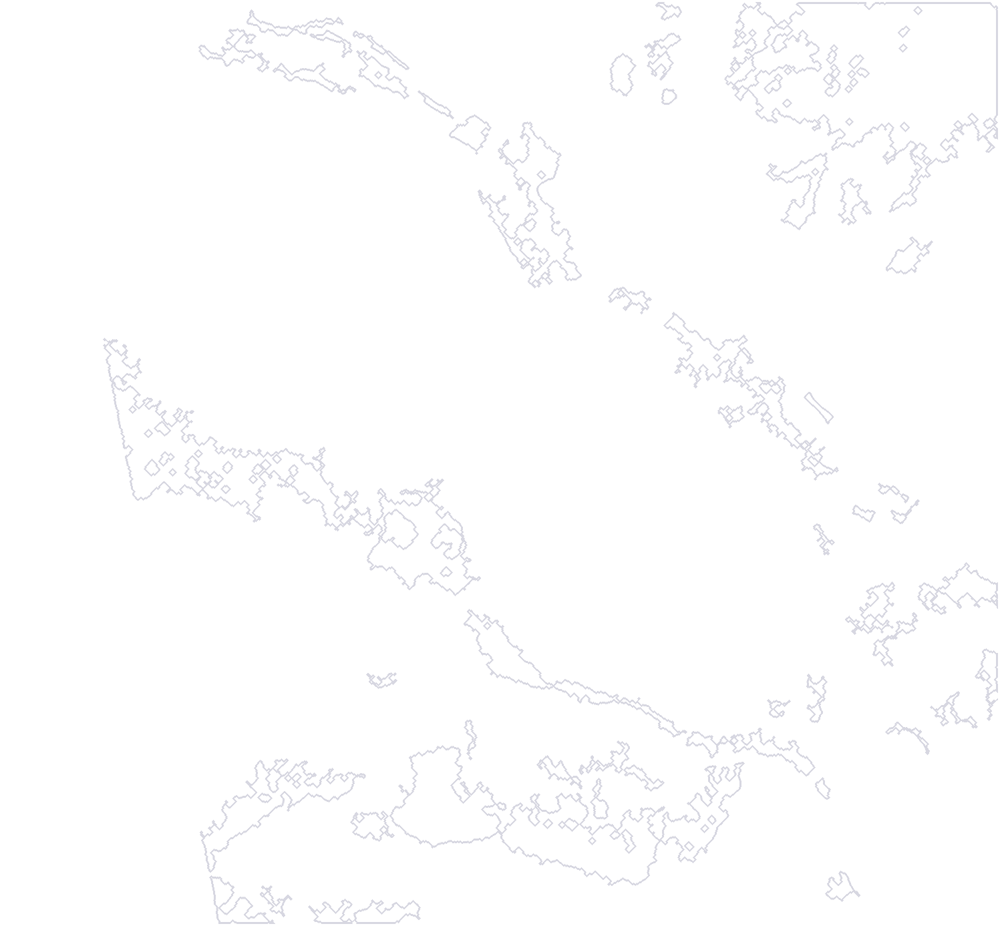
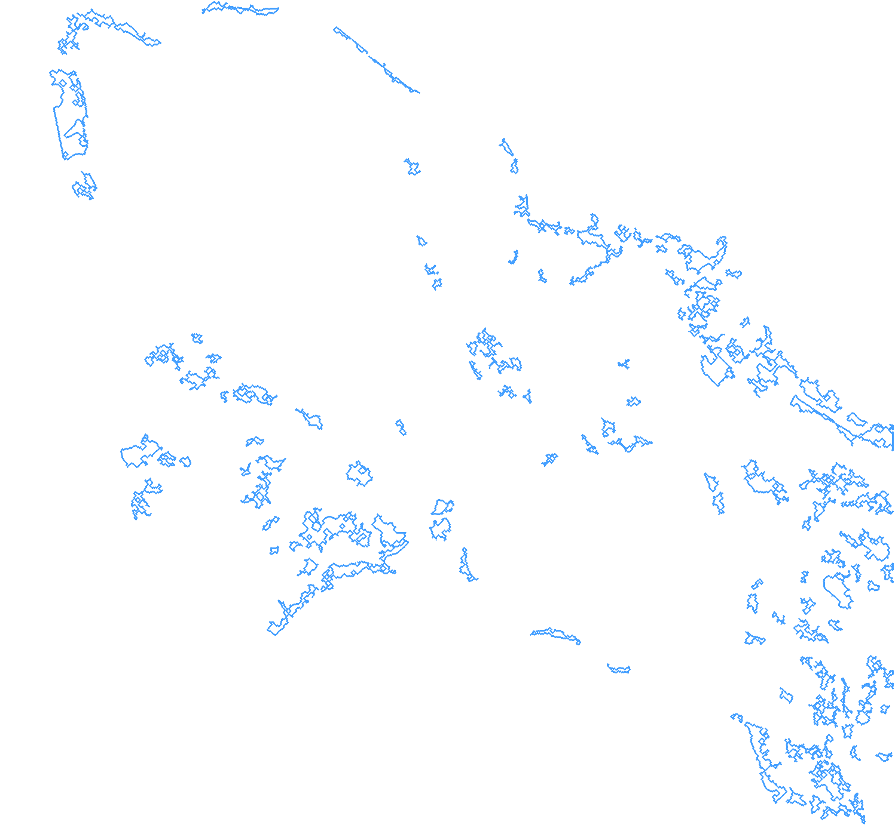
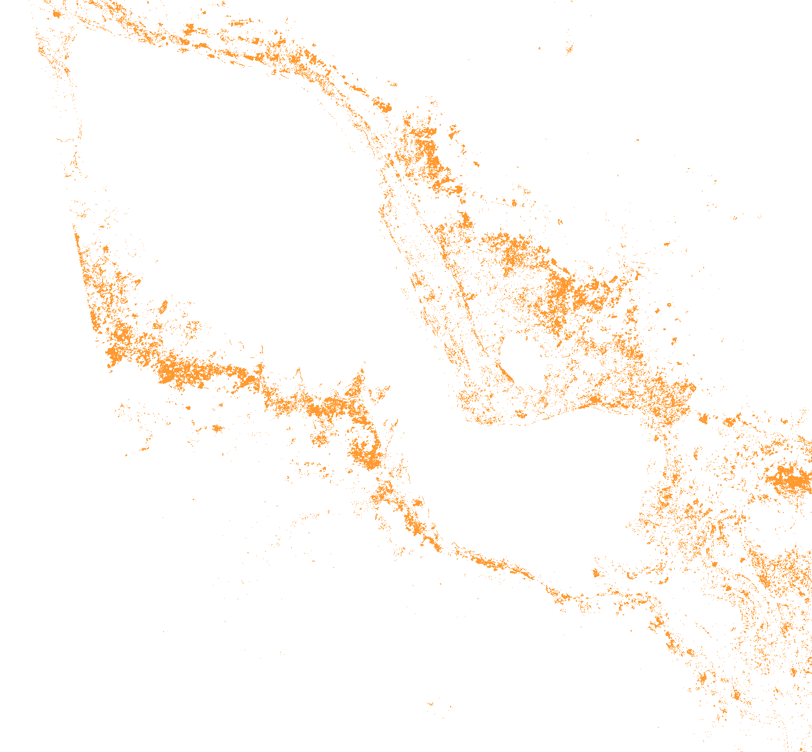

NASA Space Apps Challenge 2026
Challenge: Dancing with the SARs
See the floods the map leaves blank.
Flood maps go blind under cloud and forest. NISAR's L-band radar sees the water there. Canada's RCM radar checks it, and RADARSAT-1 adds the years before.
By Smooth Operators · Roy, Shai, Noa · Haifa (Technion), Israel






Tonle Sap, Cambodia · 17 Oct 2026
Flood in the official map (GFM)
Official map: "cannot see here"
NISAR addition: water in the blank